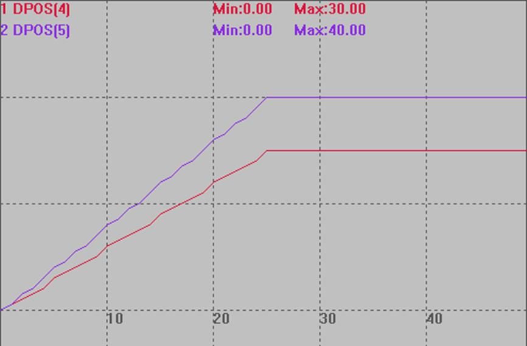

|
类型 |
运动指令 |
|
描述 |
不带加减速的运动指令，单位为脉冲个数。 使用FORCE_SPEED与矢量距离直接计算出运行时间，使用FORCE_SPEED与矢量距离直接计算出运行时间，例如振镜矢量距离1，FORCE_SPEED=10000，运动时间为1/10000，单位s，即100us。 支持MPULSCANABS绝对运动。 可以与MOVE_WAIT、MOVE_OP一起实现us级别的时间控制。 非振镜轴类型也可以使用，但要自己分段控制速度来做加减速。 这个指令没有拐角减速，必须增加MOVE_DELAY 来实现延时减速。 20220225以上固件支持。 |
|
语法 |
MPULSCAN vectpul, pul1[,pul 2] [,pul 3]… vectpul：矢量脉冲长度，外面计算出来，减少控制器执行时间 pul1,2,3：各轴的脉冲距离或长度，直接使脉冲单位，不再进行UNITS转换 |
|
适用控制器 |
振镜控制器 |
|
例子 |
BASE(4,5) ATYPE=21,21 FORCE_SPEED=1000,1000 '振镜运动速度 DPOS=0,0 AXIS_ZSET=2 '开启精准输出 TRIGGER MOVE_OP(0,1) MPULSCANABS 50,30,40 '振镜运动，矢量长度50个脉冲，轴4运动30，周五运动40 MOVE_DELAY(0.2) '延时200us MOVE_OP(0,0) '输出 END
振镜轴运动轨迹如下 DPOS(4)垂直刻度20 DPOS(5)垂直刻度20  |
|
相关指令 |